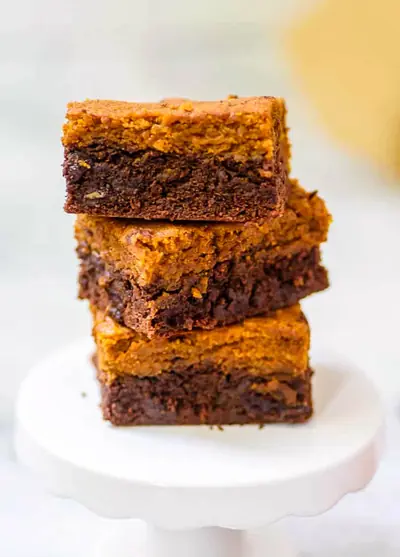

Healthy Pumpkin Brownies

Ingredients
- ¾ cup Whole Wheat Pastry Flour
- ½ tsp baking powder
- ¾ tsp salt
- ⅓ cup brown sugar (Increase the sugar if you want more of a traditional super sweet brownie.)
- ¼ cup butter
- ¼ cup unsweetened applesauce
- 2 flax eggs
- 1 tsp vanilla extract
- ¼ cup unsweetened soy milk
- ¼ cup unsweetened cacao powder
- 6 tbsp dark chocolate chips
- ¾ cup unsweetened pumpkin puree
- 2 tsp ground cinnamon
- ½ tsp ground cloves
- ½ tsp nutmeg
Steps
- Preheat oven to 350°F. Line a 8×8 baking dish with parchment paper or spray with cooking spray. In a large bowl, combine the flour, salt and baking powder. Set aside.
- In another bowl, cream together the sugar and butter. Then mix in the flax eggs, applesauce and vanilla until well combined.
- Pour wet ingredients into dry ingredients. Stir together with a spatula just until well combined. Then pour half of this batter into the other bowl. To the first bowl, fold in the soy milk, cocoa powder and chocolate chips.
- To the second bowl, stir in pumpkin puree and the spices.
- Pour the chocolate batter into the baking dish and spread in an even layer across the bottom.
- Then pour the pumpkin batter on top and spread in an even layer.
- Bake in preheated oven for 25-30 minutes, or until a toothpick inserted comes out clean. Allow to cool to room temperature before cutting and serving.
Recipe by Anjali Shah · The Picky Eater, from The Picky Eater. Saved here for personal use; the original has the full notes, tips and photos. Open original